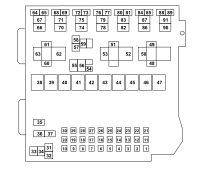

B001D JUNCTION UNIT (FRONT)
- Path
- Electrical equipment > 3 CONNECTORS > B VARIOUS FUSE HOLDERS AND VALVES > B001 JUNCTION UNIT > B001D JUNCTION UNIT (FRONT)
- Kind
- connector pinout (pin -> wire colour -> other end)
- Applies to
- engines: 1.2 8v; all production periods; only with equipment: Smart gearbox
- Interactive page
- https://sloeber94.github.io/elrnDB-fPnd/en/#/169002573
Applies to: engines: 1.2 8v; all production periods; only with equipment: Smart gearbox

Wiring | Colour |
|---|---|
- |
Pin | Cable | Destination | |||
|---|---|---|---|---|---|
Sec.. | Colour | Node | Connect. | Pin | |
2 | 2,5 | H (grey) | X | 10 | |
59 | |||||
8 | |||||
4 | 1,5 | A (light blue) | X | 1 | |
6 | |||||
7 | |||||
5 | 4 | A (light blue) | X | 50 | |
35 | |||||
6 | 1,5 | A (light blue) | X | 1 | |
7 | |||||
4 | |||||
7 | 1,5 | A (light blue) | X | 1 | |
6 | |||||
4 | |||||
8 | 2,5 | H (grey) | X | 10 | |
59 | |||||
2 | |||||
10 | 2,5 | H (grey) | X | 59 | |
8 | |||||
2 | |||||
12 | 1,5 | AG (light blue with yellow stripe) | F | ||
14 | 0,75 | BL (white with blue stripe) | 28 | ||
14 | 0,75 | BL (white with blue stripe) | X | 3 | |
3 | |||||
14 | 0,75 | AR (light blue with red stripe) | L | ||
15 | 1,5 | AN (light blue with black stripe) | C | ||
16 | 0,5 | CL (orange with blue stripe) | 1 | ||
17 | 0,75 | AR (light blue with red stripe) | 8 | ||
18 | 1 | W | 1 | ||
20 | 2,5 | ZG (violet with yellow stripe) | A | ||
22 | 1,5 | RV (red with green stripe) | 82 | ||
23 | 1 | R (red) | 78 | ||
24 | 1,5 | C (orange) | B | ||
25 | 0,5 | BR (white with red stripe) | 16 | ||
26 | 1,5 | R (red) | 2 | ||
27 | 1,5 | V (green) | 70 | ||
29 | 1,5 | VL (green with blue stripe) | 66 | ||
30 | 1,5 | RB (red with white stripe) | 27 | ||
35 | 4 | A (light blue) | X | 5 | |
50 | |||||
36 | 4 | L (blue) | 4 | ||
41 | 2,5 | R (red) | 62 | ||
42 | 2,5 | LR (blue with red stripe) | X | 12 | |
7 | |||||
44 | 2,5 | RN (red with black stripe) | 55 | ||
45 | 8 | M (brown) | A | ||
46 | 8 | RN (red with black stripe) | X | 2 | |
3 | |||||
47 | 10 | R (red) | 1 | ||
48 | 0,5 | AN (light blue with black stripe) | 4 | ||
49 | 0,5 | N (black) | 4 | ||
50 | 4 | A (light blue) | X | 5 | |
35 | |||||
54 | 0,5 | M (brown) | 55 | ||
55 | 2,5 | RN (red with black stripe) | 44 | ||
56 | 2,5 | AR (light blue with red stripe) | 2 | ||
57 | 0,5 | CR (orange with red stripe) | X | 12 | |
7 | |||||
29 | |||||
58 | 0,5 | ZB (violet with white stripe) | 62 | ||
59 | 4 | H (grey) | X | 10 | |
8 | |||||
2 | |||||
60 | 0,75 | AN (light blue with black stripe) | 31 | ||
61 | 0,5 | N (black) | 11 | ||
62 | 2,5 | R (red) | 41 | ||
63 | 2,5 | Z (violet) | 2 | ||
64 | 0,5 | CN (orange with black stripe) | X | 5 | |
68 | |||||
65 | 0,35 | RV (red with green stripe) | 6 | ||
66 | 1,5 | VL (green with blue stripe) | 29 | ||
67 | 1,5 | ZB (violet with white stripe) | 1 | ||
68 | 0,35 | CN (orange with black stripe) | X | 5 | |
64 | |||||
69 | 0,35 | HM (grey with brown stripe) | 16 | ||
70 | 1,5 | V (green) | 27 | ||
71 | 1 | S (pink) | 2 | ||
71 | 1 | S (pink) | 2 | ||
76 | 1 | R (red) | 78 | ||
77 | 0,5 | NV (black with green stripe) | 2 | ||
78 | 1 | R (red) | 23 | ||
78 | 1 | R (red) | 76 | ||
79 | 1 | Z (violet) | 1 | ||
80 | 0,35 | LV (blue with green stripe) | 6 | ||
81 | 0,35 | HR (grey with red stripe) | 17 | ||
82 | 1,5 | RV (red with green stripe) | 22 | ||
83 | 1 | VB (green with white stripe) | 2 | ||
83 | 1 | VB (green with white stripe) | 2 | ||
84 | 0,35 | CB (orange with white stripe) | X | 28 | |
6 | |||||
9 | |||||
85 | 0,5 | ZN (violet with black stripe) | 42 | ||
86 | 1,5 | MN (brown with black stripe) | X | 3 | |
76 | |||||
87 | 1,5 | M (brown) | G | ||
Topics linked from this page (30)
- 12 FRONT
- B001D JUNCTION UNIT (FRONT)
- C011 RIGHT FRONT EARTH
- D001 FRONT/DASHBOARD COUPLING
- D004 FRONT/ENGINE COUPLING
- D006 FRONT/REAR COUPLING
- D008 AIR CONDITIONING-HEATER FRONT COUPLING
- D097A SHORT CIRCUITING COUPLING (FRONT)
- D097B SHORT CIRCUITING COUPLING (FRONT)
- F010 LEFT HEADLAMP
- F011 RIGHT HEADLAMP
- F015 LEFT FOG LAMP
- F016 RIGHT FOG LAMP
- H001A IGNITION SWITCH (FRONT)
- H037 GEAR CONTROLS
- I030 BRAKE PEDAL SWITCH
- K074 SLEWING SENSOR (VDC)
- M001A BODY COMPUTER (FRONT)
- M001C BODY COMPUTER (FRONT)
- M001D BODY COMPUTER (FRONT)
- M010B ENGINE MANAGEMENT ECU (FRONT)
- M051 Braking system control unit
- M054A ROBOTIZED TRANSMISSION CONTROL UNIT (FRONT)
- M054B ROBOTIZED TRANSMISSION CONTROL UNIT (FRONT)
- M086A ELECTRIC STEERING CONTROL UNIT (FRONT)
- M086B ELECTRIC STEERING CONTROL UNIT (FRONT)
- N011 FAN MOTOR
- N025 HEADLAMP WASHER PUMP MOTOR
- N047 ROBOTIZED GEARBOX ELECTRIC PUMP
- P011 LOW-TONE HORN